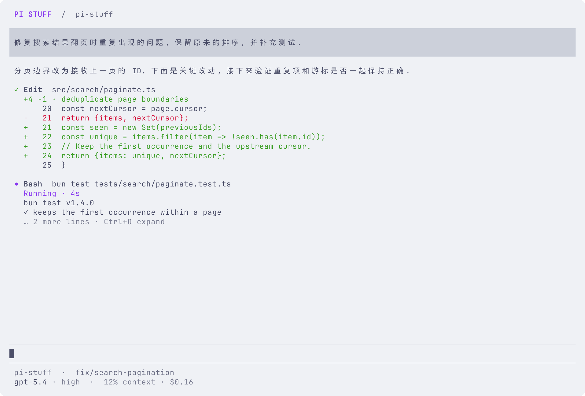
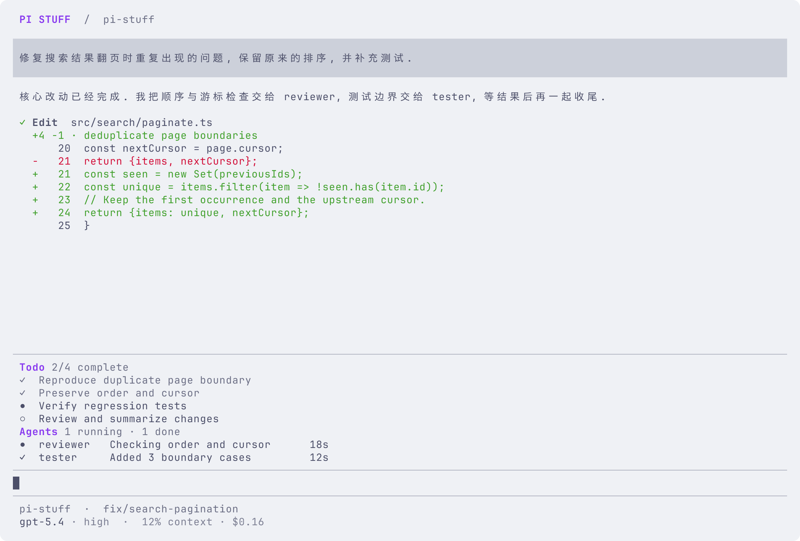
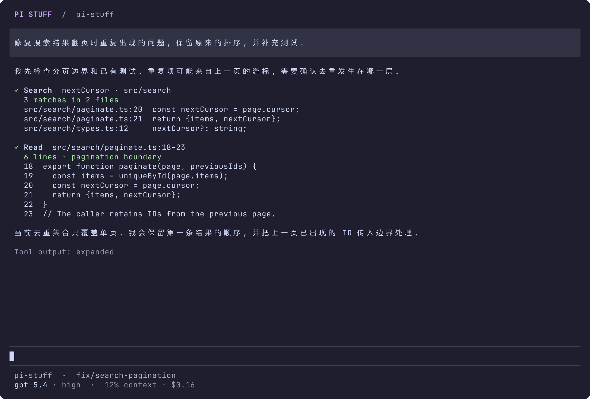
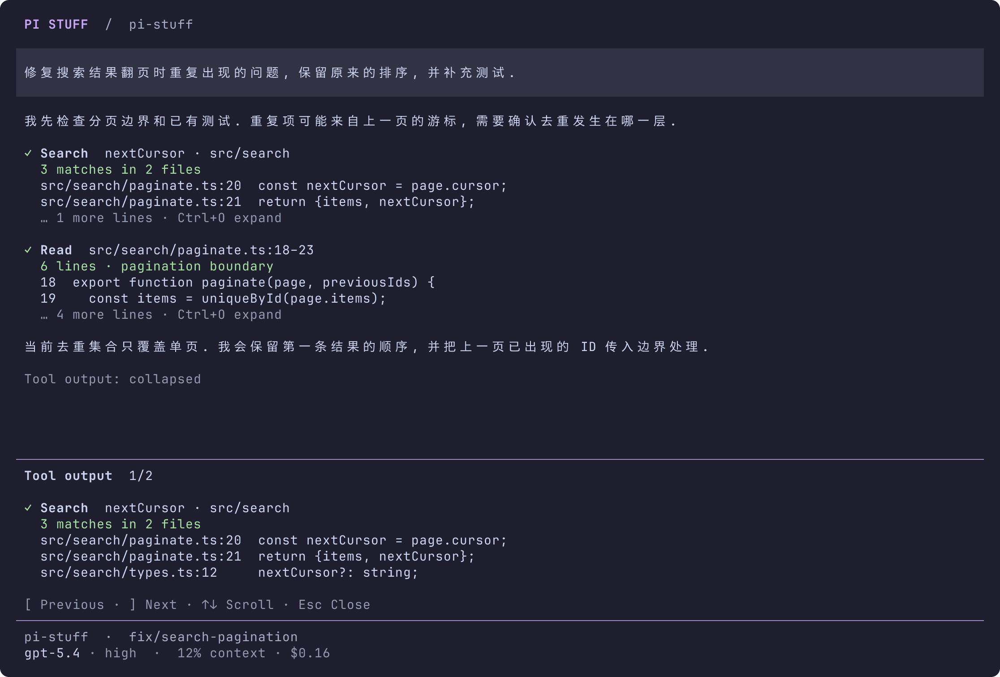
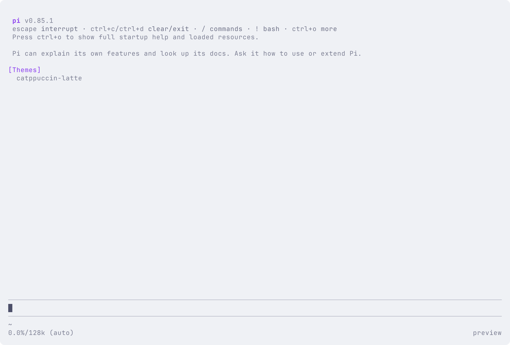

从欢迎页到一次任务结束, 观察完整界面的信息层级. 旧版是参考基础, 这些图片用于讨论, 尚未确定为生产方案.
图片来自真实 Pi 0.85.1 终端运行. 内容和执行状态为隔离样例, Todo 和 Agents 不是当前产品中已实现的能力. 点击图片查看原始尺寸.
保留 Pi 标识、加载概况与输入入口, 缩短欢迎区.
打开原图 · 终端文本 · ANSI
正文、检索摘要和原生输入区一起查看. 深色主题.
文件、改动数量、上下文和运行状态放在同一会话中.

参考旧版输入区上方的任务清单和 agent 状态.

保留失败结果、关键错误和下一步, 不暗示修改已回滚.
总结结果与验证状态, 输入区保留下一条请求.
80 × 30, 检查中文换行、工具目标和底部信息.
使用 Pi 原生 SettingsList. Enter 修改, Esc 关闭.
通过 Ctrl+O 展开, 与紧凑视图使用同一份内容.

逐个查看完整输出, [ ] 切换, 方向键滚动.

同版本与主题的隔离原生启动画面, 没有加载预览扩展.
